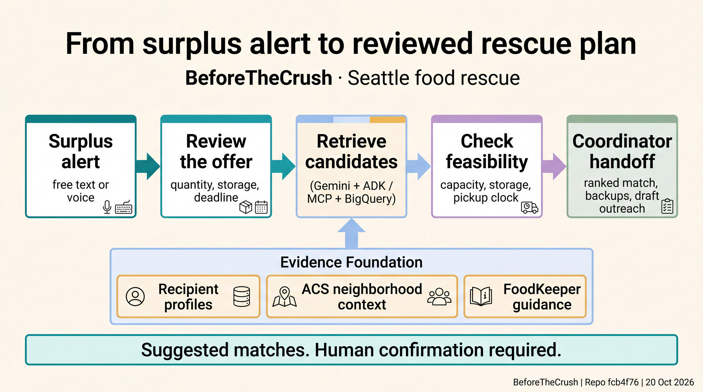
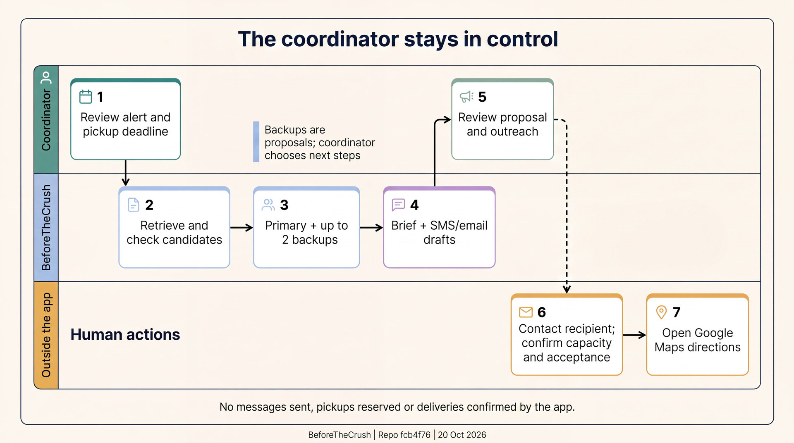
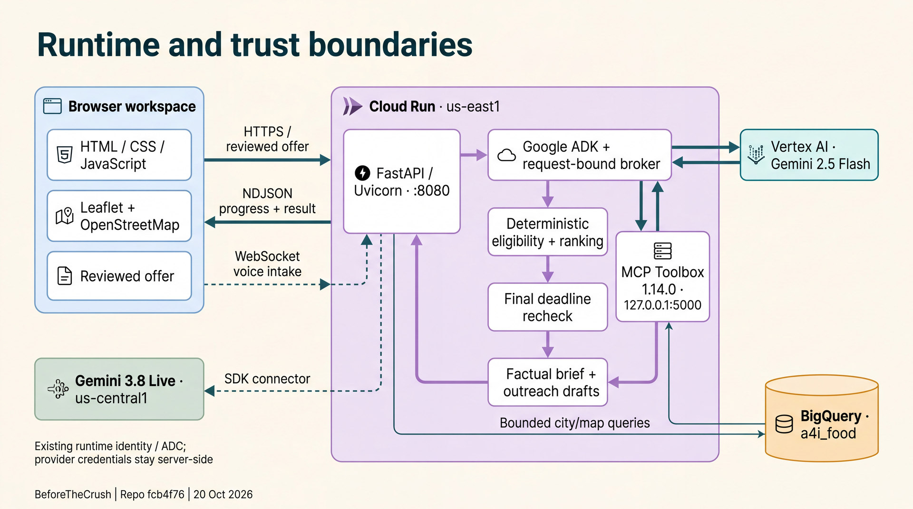
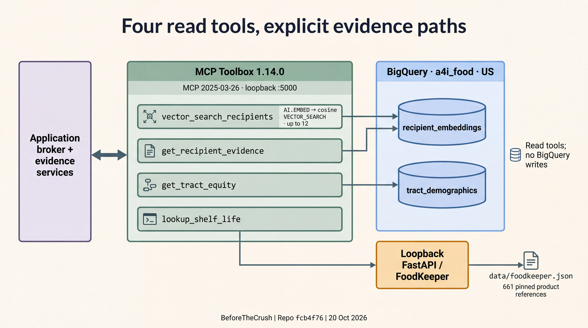
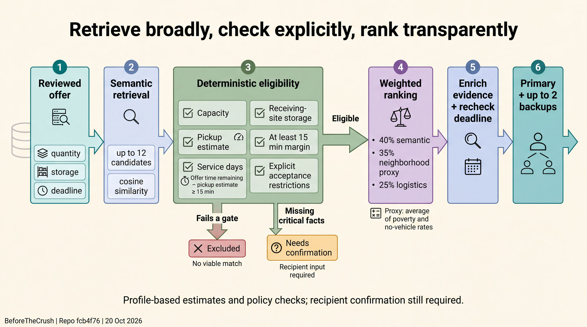
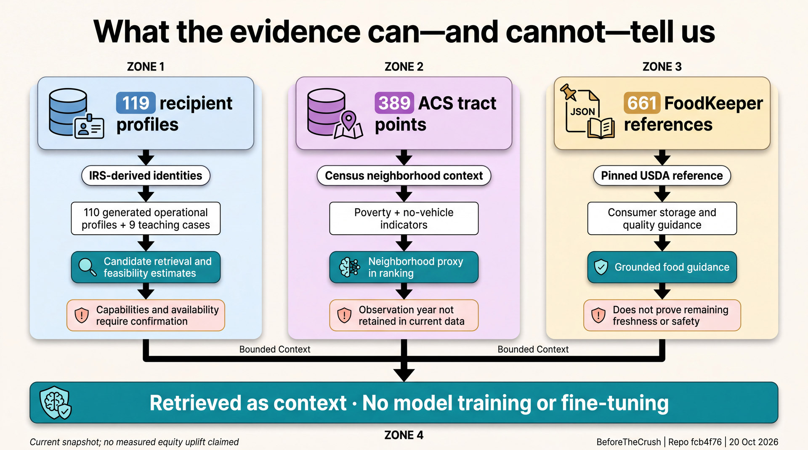

Figure 01
From surplus alert to reviewed rescue plan
A reviewed surplus offer moves through candidate retrieval and feasibility checks to a coordinator handoff. Evidence informs the proposal; a person confirms the next step.
1920 × 1072
Seattle food rescue · 20 October 2026
Six diagrams for the pitch, technical walkthrough and research method—grounded in the Food Equity repository.
Pack 01
A clear system overview and the coordinator’s role.

Figure 01
A reviewed surplus offer moves through candidate retrieval and feasibility checks to a coordinator handoff. Evidence informs the proposal; a person confirms the next step.

Figure 02
The system prepares a primary match, up to two backups and outreach drafts. The coordinator contacts recipients to confirm capacity and acceptance, then opens directions.
Pack 02
Runtime boundaries and the four tool-to-evidence paths.

Figure 03
The browser connects to the Cloud Run FastAPI service. The broker uses Vertex AI and loopback MCP Toolbox; the optional Live voice lane stages input for review.

Figure 04
Four read tools expose recipient retrieval, exact recipient evidence, tract context and pinned FoodKeeper guidance. FoodKeeper is a local reference, separate from BigQuery.
Pack 03
Decision methodology and the limits of each evidence source.

Figure 05
Explicit checks cover capacity, storage, service, acceptance and the pickup clock. Missing facts are flagged for confirmation; eligible candidates are ranked, enriched with evidence and rechecked.

Figure 06
Recipient profiles, neighborhood context and FoodKeeper references support retrieval and guidance, with explicit limits on what each source establishes.